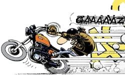
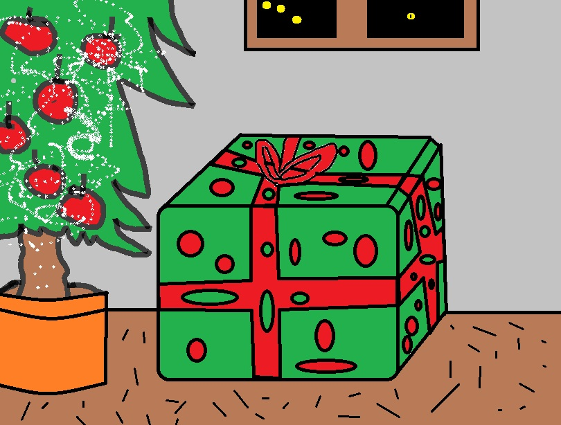
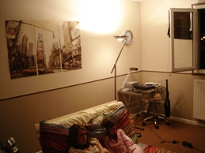

Nous vous souhaitons nos meilleurs voeux pour cette nouvelle année 2015
Nous vous souhaitons nos meilleurs voeux pour cette nouvelle année 2015 Marie-Mathilde et Jerome ont organisé leur 1er Noel dans leur nouvelle maison à La Harengère. Nous nous sommes donc tous retrouvé pour cette traditionnelle fête de famille. Nous en avons profité pour faire une photo de famille que vous pouvez découvrir sur le site.
Marie-Mathilde et Jerome ont organisé leur 1er Noel dans leur nouvelle maison à La Harengère. Nous nous sommes donc tous retrouvé pour cette traditionnelle fête de famille. Nous en avons profité pour faire une photo de famille que vous pouvez découvrir sur le site.  Le 14 Décembre, nous sommes allés voir la famille Jean pour l'anniversaire de Stephanie qui a pris une année suplémentaire.
Le 14 Décembre, nous sommes allés voir la famille Jean pour l'anniversaire de Stephanie qui a pris une année suplémentaire. C'est la fin de nos vacances d'été que nous avons passé à la Joue du Loup, en Sologne et à Paris. Le temps n'a pas était terrible cette année avec beaucoup de pluie et des températures dignes d'un mois d'automne. A la Joue du Loup, nous avons rejoint Margaret et Joël. Le groupe n'a pas cessé de s'agrandir avec la famille Gravois au complet et les 2 petites Jean Joséphine et Juliette qui nous en rejoint. Nous nous sommes ensuite rendus en Sologne à Center Parc pour profiter des châteaux de la Loire. Nous avons visité les châteaux de Chambord, Cheverny, Chenonceau et le zoo de Beauval. Ensuite, nous sommes rentrés sur Paris que nous n'avons pas quitté car le temps était exécrable sur l'ensemble de la France. Nous nous sommes donc rabattus sur une exposition, du cinéma et les berges de la seine.
C'est la fin de nos vacances d'été que nous avons passé à la Joue du Loup, en Sologne et à Paris. Le temps n'a pas était terrible cette année avec beaucoup de pluie et des températures dignes d'un mois d'automne. A la Joue du Loup, nous avons rejoint Margaret et Joël. Le groupe n'a pas cessé de s'agrandir avec la famille Gravois au complet et les 2 petites Jean Joséphine et Juliette qui nous en rejoint. Nous nous sommes ensuite rendus en Sologne à Center Parc pour profiter des châteaux de la Loire. Nous avons visité les châteaux de Chambord, Cheverny, Chenonceau et le zoo de Beauval. Ensuite, nous sommes rentrés sur Paris que nous n'avons pas quitté car le temps était exécrable sur l'ensemble de la France. Nous nous sommes donc rabattus sur une exposition, du cinéma et les berges de la seine. J'ai eu le droit pour mon travail d'aller faire un tour en Russie. Je me suis donc rendu à Ijvesk en juin. C'est une ville à 1000 Km à l'est de Moscou. C'est la capitale de la république d'Oudmourtie. Cela fait le deuxième fois que je vais en Russie. La première fois, c'était à Moscou. J'ai donc décourvert cette fois-ci la Russie profonde avec cette ville Ijvesk qui a été très longtemps une ville fermée car elle avait une industrie militaire. C'est aussi la ville natale de Kalachnikov.
J'ai eu le droit pour mon travail d'aller faire un tour en Russie. Je me suis donc rendu à Ijvesk en juin. C'est une ville à 1000 Km à l'est de Moscou. C'est la capitale de la république d'Oudmourtie. Cela fait le deuxième fois que je vais en Russie. La première fois, c'était à Moscou. J'ai donc décourvert cette fois-ci la Russie profonde avec cette ville Ijvesk qui a été très longtemps une ville fermée car elle avait une industrie militaire. C'est aussi la ville natale de Kalachnikov.  Petite escapade à Rennes pour rendre visite à François. Le temps nous a permis de dejeuner en terrasse. Agréable moment en famille.
Petite escapade à Rennes pour rendre visite à François. Le temps nous a permis de dejeuner en terrasse. Agréable moment en famille. Virginie et moi même nous avons profité de queqlues jours de vacances pour faire une escapade en Pays Basque. Nous nous sommes arrêtés en chemin à Bourg de Visa pour rendre visite à la famille. Puis, nous avons poursuivi vers Saint-Jean-Pied-de-Port, Espelette,Ainhoa, Saint-Jean-de-Luz, San Sebastian, Biarritz. Nous sommes remontés sur Paris en faisant une étape à Bordeaux.
Virginie et moi même nous avons profité de queqlues jours de vacances pour faire une escapade en Pays Basque. Nous nous sommes arrêtés en chemin à Bourg de Visa pour rendre visite à la famille. Puis, nous avons poursuivi vers Saint-Jean-Pied-de-Port, Espelette,Ainhoa, Saint-Jean-de-Luz, San Sebastian, Biarritz. Nous sommes remontés sur Paris en faisant une étape à Bordeaux.  Nous avons célébré en famille la communion de Juliette. Nous nous sommes tous retrouvés la veille à Changé où François nous a rejoint.
Nous avons célébré en famille la communion de Juliette. Nous nous sommes tous retrouvés la veille à Changé où François nous a rejoint.  J'ai encore eu la chance de pouvoir aller en Inde pour le boulot. Je me suis rendu au même endroit que la dernière fois, Chennai, mais avec la chance de pouvoir voyager sur le plus gros avion Airbus, A380, sur Emirates Airlines en passant par Dubai. Bref de très bonnes conditions de voyage.
J'ai encore eu la chance de pouvoir aller en Inde pour le boulot. Je me suis rendu au même endroit que la dernière fois, Chennai, mais avec la chance de pouvoir voyager sur le plus gros avion Airbus, A380, sur Emirates Airlines en passant par Dubai. Bref de très bonnes conditions de voyage. Bonne années à tous. Nous vous souhaitons nos meilleurs vœux pour cette nouvelle année 2014
Bonne années à tous. Nous vous souhaitons nos meilleurs vœux pour cette nouvelle année 2014 Nous avons profité de quelques jours de vacances pour faire une petite escapade en Bretagne. Sur notre chemin, nous nous sommes arrêtés à Alligator Bay pour satisfaire une demande insistante de Nathan. Les repas des alligators, tortues, serpents, lézards et autre reptiles n’ont plus de secret pour nous. Nous en avons profité pour faire une visite nocturne, humide et express du Mont Saint Michel. Ensuite, nous avons été accueillis à Etables sur Mer par Nelly où nous avons passé la soirée en famille avec Patrick, Sylvie, Pauline et Ninen. Enfin, nous avons fini le périple breton par une visite à Rennes pour voir François et Pierre.
Nous avons profité de quelques jours de vacances pour faire une petite escapade en Bretagne. Sur notre chemin, nous nous sommes arrêtés à Alligator Bay pour satisfaire une demande insistante de Nathan. Les repas des alligators, tortues, serpents, lézards et autre reptiles n’ont plus de secret pour nous. Nous en avons profité pour faire une visite nocturne, humide et express du Mont Saint Michel. Ensuite, nous avons été accueillis à Etables sur Mer par Nelly où nous avons passé la soirée en famille avec Patrick, Sylvie, Pauline et Ninen. Enfin, nous avons fini le périple breton par une visite à Rennes pour voir François et Pierre. Comme d'habitude, nous avons fêtés à Saint Aunbin les anniversaires d'Aout de la famille. Il y avait celui de Camille, Joël, Joséphine et Philippe. Nous avions aussi prévu celui d'Olivier mais la famille Pimont Olivier a oublié de venir. Je crois que ces soeurs ne vont pas perdre l'occasion de se moquer gentillement de lui la prochaine fois :-) Les plus courageux se sont baignés dans l'après-midi bien que le soleil n'était pas vraiement au rendez-vous.
Comme d'habitude, nous avons fêtés à Saint Aunbin les anniversaires d'Aout de la famille. Il y avait celui de Camille, Joël, Joséphine et Philippe. Nous avions aussi prévu celui d'Olivier mais la famille Pimont Olivier a oublié de venir. Je crois que ces soeurs ne vont pas perdre l'occasion de se moquer gentillement de lui la prochaine fois :-) Les plus courageux se sont baignés dans l'après-midi bien que le soleil n'était pas vraiement au rendez-vous. Nous sommes à la Joue du loup depuis le 7 aout pour des vacances bien méritées. Au programme : baignades, via ferrata, marches en montagne, escalades, bains de soleil.
Nous sommes à la Joue du loup depuis le 7 aout pour des vacances bien méritées. Au programme : baignades, via ferrata, marches en montagne, escalades, bains de soleil.
Bon Anniversaire Marie-Mathilde. Nous avons passé une agrèable journée à Isneauville dans le jardin de la maison de Marie. Les tables avaient été dressées sous les tentes. Le soleil était au rendez-vous. Une bonne partie de ses frères et soeurs étaient présents. Cela faisait donc beacoup de monde autour du gateau d'anniversaire. Pour un premièr rendez-vous familliale chez eux, Marie et Jérome ont réussi leur organisation. A quand la prochaine ?
J'ai eu le droit à un déplacement professionnel appréciable puisqu'il s'est déroulé au Maroc à Casablanca. J'ai pu le prolonger par un week-end sur place. Ainsi j'ai découvert la ville de la jeunesse de Joel dont il nous a si souvent parlé. Je peux vous dire qu'elle est très agrèable par la proximité de la mer, ses souks, la vielle ville, son bord de mer et sa cuisine.
Vendredi matin, nous avons eu la surprise de découvrir que l'un des épisodes de la saison 2014 de Top Chef se tournait juste devant notre immeuble. En effet, ils avaient choisi de tourner un des épisodes au marché du Plessis Robinson. Evidemment, cela a provoqué chez les filles une vive émotion accompagnée d'une grande excitation. Vous pouvez voir sur la photo que Charlotte à fait la groupie des célèbres chefs de la série.
Cette semaine, nous avons fêté l’anniversaire de Nathan. Il a maintenant 11 ans. Cet anniversaire s’est étalé sur 3 jours. Jeudi 13 juin, c’était la date anniversaire avec un diner en famille. Vendredi soir, c’était la soirée avec ses copains qui ont dormis à la maison. Et enfin Samedi, c’était un déjeuner avec une partie de la famille Normande.
Nous avons participé au mariage de Jeanne et Marc à Limours. Nous nous sommes rendu ensuite au chateau de Breteuil ou nous attendait une très belle salle de cérémonie ainsi qu'un parc fort appréciable. Nous avons eu le droit à une organisation parfaite orchestrée par Fabienne ainsi qu'un hilarant petit film sur Jeanne façon épisode Bref.
Nathan et Philippe ont profité de quelques jours de vacances en ce mois de mai pour passer quelques jous au bord de la mer à Saint Aubin. Le reste de la famille n'a pas pu venir mais ils ont été très choyés par Catherine et Anne malgré un temps pas toujours très clément.
Joyeuses Pâques. Nous avons passé Pâques à Bonsecours où la famille coté Pimont a été réunie. Les chocolats étaient au rendez-vous ainsi que les cloches.
Hier soir, c'est avec grand plaisir que nous avons diné Chez Philippe et Michele. C’était pour nous des retrouvailles puisque nous nous étions perdus de vue depuis plusieurs années malgré le fait que nous n’habitions pas très loin les uns des autres. Comme d’habitude, Philippe nous a reçus très chaleureusement. Il nous a démontré ses talents de cuisinier. Merci Philippe pour cette soirée.
Vendredi 15 mars, nous avons fait une escapade à Rennes pour rendre visite à notre Breton. François en a profité pour nous faire faire une petite visite de Rennes malgré le temps peu clément et pluvieux. Le légendaire temps Breton était de la partie. Nous nous sommes réchauffés dans une crêperie le midi et nous avons finit dans un centre commercial pour quelques emplettes.
Une fois de plus le père Noël a encore fait des folies! Nous avons tous été très gâtés et tenions à remercier toutes et tous pour tous ces cadeaux.
Nous avons apprécié aussi les très bons repas préparés par Joëlle et Margaret.
Mention spéciale pour Jérôme Travolta qui a mis une super ambiance pour le réveillon. Bisous à tous.
Nous avons apprécié aussi les très bons repas préparés par Joëlle et Margaret.
Mention spéciale pour Jérôme Travolta qui a mis une super ambiance pour le réveillon. Bisous à tous.
Nous avons profité de ce week-end ensoleillé pour fêter à Saint-Aubin les anniversaires de Camille, Charlotte, Philippe, Joël, Ingrid et Olivier. Grâce à Anne, nous avons pu réunir plus de 25 personnes autour d’un délicieux buffet. Le repas a été suivi d’une ballade à la plage, où les plus téméraires se sont même baigné. Henriette nous a prouvé son courage en affrontant une eau finalement pas si froide que ça. En bref, une très belle journée qui a fait oublier à tous le stress de la rentrée.
Nous avons une nouvelle Madame Pimont dans la famille.Henriette et Olivier se sont mariés cet été. Nous avons profité de la fête qui a suivi. Cela a été l'occasion de faire la connaissance de la famille d'Henriette.
Voici déjà une semaine que nous sommes a La Joue du Loup. Le soleil est au rendez-vous et nous permet de profiter des activites que nous offre la montagne. Nathan a brillament reussi sa premiere via ferrata des vacances. Il a encore du mal a apprécier les randonnees mais il est arrive au bout de celle d'aujourd'hui qui nous a mene jusqu'au collet du Tat. Nous etions accompagne de la famille Aljancic et d'Alain. Nathan prefere de loin les baignades au lac de Veynes.
Enfin !! Nous sommes en vacances. Nous partons à la montagne Lundi matin. La joue du loup nous attend avec son soleil. L'escalade, la via ferrata, le cannyoning, les baignades, les promenades, le VTT sont au programme de la semaine. Nous rentrerons pour le mariage d'Henriette et Olivier le 25/08. Il nous restera 1 semaine avant la rentrée. Il nous reste à organiser cette dernière semaine de répit avant la reprise.
Nathan a eu 1O ans. Le petit dernier de la maison est maintenant un grand qui va rentrer en 6eme en Septembre. Hier une petite fête a été organisée à la maison. Merci pour les cadeaux offerts à Nathan. Il ne quitte plus sa nouvelle montre. Une montre qui aurait du être offerte à Olivier puisque celui-ci et sa petite famille sont arrivés avec 2 heures de retard. Mais rien de grave car ils ont très vite rattrapé leur retard pour se joindre au traditionnel chant d'anniversaires autour du gâteau.
Bonjour à tous, nous souhaitons une bonne fête des mères à nos mamans de la famille. Virgnie a eu aussi le droit à son petit cadeau original (collier de pates voir la photo ci-contre). Ces filles ont beaucoup d'humour.
Me voilà de retour d'un déplacement professionnel en Inde. Evidement, j'en ai profité pour visiter un peu ce pays si déroutant. C'est vraiment un pays différent. En ville, ca grouille de partout. On voit du monde partout. On a cette impression de surpopulation qui nous prend à la gorge. La circulation est très spéciale. Pour un occidental, il est complètement impossible de prendre le volant. Il doit y avoir un code de la route mais ce n'est absolument pas le notre. On perd tous nos repaires. Les chauffeurs de taxi sont des as du volant pour pouvoir éviter les voitures en contre-sens, les motos avec 4 passagers, les piétons et les vaches. Coté alimentation, c'est assez difficile. Il y a 2 sortes de plat en inde : spicy and very spicy. C'est vraiment difficile pour l'estomac. La chaleur est très humide. Cela se sent des l'arrivé à l'aéroport. J'ai quitté Paris à -7°C et j'ai trouvé 32°C à l'arrivé. Les indiens sont très accueillants surtout en dehors des villes. J'ai en tête de très bonnes rencontres, des enfants souriants et encore plein d’autres bons souvenirs. Je vous ai mis quelques photos. Si vous avez l’occasion de vous y rendre n’hésitez pas un instant.
Elle sera belle ta \" mob\" !
Et voilà cela n'a pas trainé! Le nouveau bolide de Philippe est réservé chez le concessionnaire. Il promet à tout le monde d'être très prudent.
Félicitations pour le permis moto. On a hâte de voir le bolide. Cédric a miraculeusement vendu sa moto. On y croyait pas. Biz a tous

Et voilà, c'est fait. J'ai obtenu le permis moto ce matin. Après une première étape scooter, je passe à la moto. Pour l'instant, je n'ai pas de moto mais les concessionnaires de la région vont très bientôt avoir de la visite.
Nous venons de passer Noël en Normandie où nous avons retrouvé une bonne partie de la famille. Un premier acte de ce noël s’est déroulé à Yvetôt avec le plaisir d’y découvrir 2 mères noël Laurine et Margaux (voir les photos). Laure a très bien organiser cette soirée tout en respectant les désidératas de certains comme ne pas être 13 à table :-) qui a valu à Gérôme une petite mise en boite dans les règles. Le père Noël a été généreux comme le lendemain à Bonsecours lors du deuxième acte. Comme d’habitude, le déjeuner de mamie Margaret fût excellent et accompagner d’un exceptionnel « velours de l’estomac » d’après l’expression de papi Joël.
Le moment tant attendu des vacances est enfin arrivé pour les enfants. Fatigués par ce long premier trimestre, ils vont pouvoir se reposer quelques jours avant de rejoindre la Normandie pour passer les fêtes en famille...
 Nous voilà rentrés d'Irlande depuis lundi soir. Bien que le soleil ne se soit pas beaucoup montré, nous avons passé des vacances géniales. Au programme quelques vieilles pierres, des visites de manoirs, de châteaux, cathédrales et autres abbayes. Nous avons tellement aimé Dublin que nous n'avons pas hésité à y retourner.De plus nous avons découvert des paysages grandioses. Voilà déjà la fin des vacances et il nous faut maintenant préparer la rentrée. A très bientôt pour de nouvelles aventures.
Nous voilà rentrés d'Irlande depuis lundi soir. Bien que le soleil ne se soit pas beaucoup montré, nous avons passé des vacances géniales. Au programme quelques vieilles pierres, des visites de manoirs, de châteaux, cathédrales et autres abbayes. Nous avons tellement aimé Dublin que nous n'avons pas hésité à y retourner.De plus nous avons découvert des paysages grandioses. Voilà déjà la fin des vacances et il nous faut maintenant préparer la rentrée. A très bientôt pour de nouvelles aventures.
Guten tag,
Après une route facile mais pluvieuse et une nuit belge, nous sommes arrivés à Berlin samedi après-midi sous une pluie soutenue. Nous avons eu la soirée pour découvrir notre nouvel appartement, situé à Zelhendorf, quartier résidentiel et verdoyant de Berlin. Nous avons fait aujourd'hui une percée jusqu'à Charlottenburg où nous avons visité le palais royale de Sophie-Charlotte 1er reine de Prusse. C'était très baroque et très beau. Après un déjeuner tardif (16h30) de spécialités Berlinoises, nous avons fait un city tour maison en voiture pour nous familliariser avec les principaux quartiers de Berlin. Suivant la météo, le programme de deamin sera discuté ce soir et éventuellement adapté demain.
Auf Wiedersehen, Tschüss
Après une route facile mais pluvieuse et une nuit belge, nous sommes arrivés à Berlin samedi après-midi sous une pluie soutenue. Nous avons eu la soirée pour découvrir notre nouvel appartement, situé à Zelhendorf, quartier résidentiel et verdoyant de Berlin. Nous avons fait aujourd'hui une percée jusqu'à Charlottenburg où nous avons visité le palais royale de Sophie-Charlotte 1er reine de Prusse. C'était très baroque et très beau. Après un déjeuner tardif (16h30) de spécialités Berlinoises, nous avons fait un city tour maison en voiture pour nous familliariser avec les principaux quartiers de Berlin. Suivant la météo, le programme de deamin sera discuté ce soir et éventuellement adapté demain.
Auf Wiedersehen, Tschüss
Une grande fébrilité règne dans la maison à quelques heures du départ pour notre périple européen. Les valises sont presques prêtes, l'appartement propre et rangé et dès que nos \"échangeurs \" allemands seront arrivés, nous mettrons les voiles pou rejoindre
Berlin. En plus, la météo nous promet du beau temps à partir de lundi. bisous à tous et à très bientôt
Berlin. En plus, la météo nous promet du beau temps à partir de lundi. bisous à tous et à très bientôt
Nathan a profité du beau temps pour aller s'éclater en colo à la base de loisirs de Saint-Quentin en Yvelines. Là, il a pu s'essayer à l'élevage de poules et de lapins et aussi monter sur un poney. Les activités comme l'accrobranche ont dû être annulées à cause de la pluie mais heureusement la journée à Disneyland a été maintenue. Il rentrera à la maison vendredi soir.Quelques photos prises par les monos sont à découvrir...
Miame...que c'est bon les tomates cerises.Mais attention c'est pas des tomates ordinaire...CE SON LES TOMATES DU BALCON!!!!!!
Pour la première fois, nous avons organisé nos vacances plus d'une semaine à l'avance! Nous aurons cette année l'occasion de découvrir Berlin pendant une semaine et l'Irlande pendant 10 jours.En effet nous avons opté pour l'échange de logements et deux familles se relaieront chez nous pour découvrir Paris et arroser nos plantes pendant que nous découvrirons des coins d'Europe que nous ne connaissons pas encore.
C'est avec beaucoup de plaisir que nous nous sommes rendus dans le Lot et Garonne pour fêter dignement en famille les 90 ans de mamie Marthe. Françoise bravement avait pris en charge l'organisation de la fête et réuni famille et amis autour d'un déjeuner fort apprécié dont le fameux papillon charcutier réalisé par Camille et Charlotte. La fête s'est déroulé dans le gîte où nous avons logé pendant 4 jours. Nous avons pu profiter de la piscine sous un soleil radieux. Ce fût un très bon week-end. Cela restera un excellent souvenir et un avant gout des vacances.
Nathan vient d'avoir 9 ans. Nous avons organisé une petite fête à la maison pour marquer l'événement. Nathan a été gâté par vous. Il est maintenant habillé pour cet été. Les photos sont disponibles sur le site.
Merci pour les cadeaux.
Merci pour les cadeaux.
C'est enfin terminé. Virginie est arrivé à la fin de son long parcourt du combattant. Elle est rentrée rapidement à la maison après sa dernière opération. Évidement, elle ne peut pas encore faire tout ce qu'elle veut mais cela s'arrange de jour en jour. Les progrès sont constants et assez spectaculaires. Il lui faut maintenant un peu de repos pour complètement récupérer. La vie de famille a pratiquement repris sont cours habituel. La famille est de nouveau au complet ce qui permet à chacun de retrouver ces repères.
Le début de la gloire ? Et oui, Camille et un peu Charlotte sont à la une (ou presque) du journal Paris Normandie. Bon d'accord, l'article ne parle pas d'eux mais le journaliste a choisi une photo où apparaissent nos filles. Cela doit être leur coté photogénique. Pour la petite histoire, Nathan était aussi présent mais il n'apparait pas sur la photo qui a été prise lors d'un cours de cuisine.
Notre site a été censuré par notre hébergeur Free et n'était plus accessible pendant les vacances de Pâques. Après quelques négociations avec eux et quelques modifications techniques, notre site est de nouveau en état de marche. Cela me permet de vous donner les dernières news. Virginie a réintégré l'hôpital du Vésinet après 2 semaines supplémentaires à Beaujon. Normalement, elle devrait être autorisée à reprendre la position assise à partir de Mercredi prochain après avoir consulter son chirurgien préféré, Guigui. Cette consultation devrait nous donner le futur planning de Virginie pour les semaines à venir. Il y a beaucoup d'espoir et d'impatience pour cette entrevue.
La semaine dernière, un petit imprévu est venu perturber la rééducation de Virginie. Elle a fait un come back à l'hôpital Beaujon afin que les chirurgiens la remettent sur de les bons rails. Elle va maintenant très bien et est impatiente de retourner au Vézinet. Cela ne devrait pas trop tarder. Certainement d'ici la fin de la semaine, elle aura le droit de reprendre sa rééducation. Pour les enfants, les vacances sont en ligne de mire. Ils comptent les jours avant de partir en Normandie chez la mamie. Avant cela, notre Camille stressée devra finir ces examens blancs.
On comprend effectivement pourquoi elle a craqué. trop fort Doc. Mamour. Prenez soin de vous tous. Les mangeurs de rillettes vous embrassent tous très fort et espèrent vous voir très vite.
Virginie a maintenant entamé sa rééducation à l’hôpital du Vésinet à raison de plusieurs heures par jour. Comme une vraie sportive, elle a des courbatures après ces efforts. Nous pouvons maintenant l’accompagner lors de ces ballades dans le parc de l’hôpital. Vous pourrez juger de vous-même de ses progrès sur la photo. En taille, elle n’a pas rattrapé Camille mais elle a distancé Charlotte.
Virginie marche depuis quelques jours. Elle se déplace seule et est assez autonome. Une chose est assez surprenante quand on la voit debout c'est sa taille. Je pense que beaucoup vont devoir maintenant lever les yeux pour la saluer, le revanche de la petite. Elle va si bien qu'elle va dès maintenant dans un autre hôpital pour la ré-éducation et le repos. Sa nouvelle adresse est donc maintenant l'hôpital du Vésinet. Le numéro de téléphone de sa chambre est 01 30 15 81 03.
L'opération de virginie s'est bien déroulée. Elle a rejoint sa chambre ce matin. Les nouvelles sont donc bonnes. A la maison, cela s'organise doucement. Voilà maintenant 3 jours que Virginie est partie. Évidement, elle nous a laissé tes tas de consignes et le frigos plein. Nous vivons pour l'instant sur cette lancée. Aujourd'hui, j'ai pris ma journée comme tous les mercredi à venir. Me voilà au 4/5ème. Il ne va pas falloir que j'y prenne gout! Un nouvel équilibre va certainement s'installer à la maison. Pour l'instant, il n'y a pas de problème. Chacun y met du coeur, Camille à la cuisine, Charlotte au linge, moi même sur le reste. Même Nathan essaye de nous aider comme il le peut. Par exemple, les devoirs ont même été fait en avance, une première. Il va falloir tenir sur la longueur maintenant.
Virginie vient d'intégrer sa nouvelle adresse pour quelques semaines. Pour ceux qui veulent la contacter, le plus simple est de lui téléphoner sur son portable. Sinon, elle est à l'Hopital Beaujon de Clichy La Garenne dans le service orthopédique au 3ème étage lit 48.
Le numéro de téléphone du service est 01 40 87 52 53.
Le numéro de téléphone du service est 01 40 87 52 53.
Voici bien longtemps que nous ne vous avons pas donné quelques nouvelles fraiches. Tout le monde a commencé cette année avec enthousiasme. Les enfants sont à fond dans les études avec des résultats plutôt satisfaisants. Il y a bien Nathan qui a quelques problèmes avec l'orthographe à moins que cela soit un problème de travail. Il n'a pas encore compris que les devoirs n'étaient pas en option. Mais rien de grave car il ne semble pas dépourvu de quelques facilités. Camille a eu un peu de mal à reprendre après les vacances mais ce n'est pas une nouveauté. Quand à Charlotte, la langue de la perfide Albion ne l'inspire pas beaucoup. Il y a pour elle un deal encours : vacances d'été de l'autre coté de la manche si la moyenne de s'améliore pas ou vacances colo en Turquie. Il nous reste notre grand garçon François qui semble bien parti puisqu'il a validé ses premiers examens sans problème. Nous avons même eu la joie de l'avoir avec nous quelques jours cette semaine. Evidement, l'événement à venir est le passage de Virginie entre les mains des chirurgiens spécialistes du dos. Elle a longuement hésité mais elle a fini par craquer. Je vous ai mis la photo du chirurgien pour que vous compreniez pourquoi. Je vous avoue que cela n'a pas été simple de le faire venir -:)
Bonne année 2011. Et oui l'année 2010 est finie!!! Et merci à tout le monde pour les cadeaux de Noel!!!
Nous voici depuis quelques jours sous la neige. Evidement, cela fiche une vraie pagaille pour les pauvres parisiens qui n'ont aucune habitude de ce type de temps et nous nous incluons dans ces parisiens. J'ai moi même été surpris par la neige en 2 roues. Cela m'a value un trajet boulot-maison de 5h (voiture + train + métro + RER + marche à pieds). Mais je ne suis pas à plaindre car certains de mes collègues n'ont même pas pu rentrer chez eux. Virginie a été fidèle à son poste et a assuré ses gardes malgré des conditions de circulation difficiles. Pour les filles, le trafic des bus a été interrompu mais Camille a réussi à passer ces examens \"blanc\" et oui cela tombe toujours aux mauvais moments. Il n'y a guerre que Nathan qui est réjoui de cette situation.

C'est bientot Noel!!!!! Moi j'es déjà fais ma liste... mais pas finie. des lego epic mickey sur Wii
Après quelques années à chercher sa voie, c'est finalement sur la terre de ses ancêtres que François a posé ses valises. Il démarre un cursus universitaire en section européenne de Biologie à la Faculté de Rennes.Il a trouvé une colocation dans un grand appartement au 5 avenue du président Wilson et son nouveau portable est le 0640541856.
Hello everybody! We're just coming back from London where we spent five rainy but still enjoyable days. Nice hotel in Greenwich (and really good \"cuisine\"), museums, shopping, fun for everyone. See you soon.
Nous voici de retour de nos vacances à la Joue du Loup. Nous avons eu un temps mitigé avec 2 jours de pluie et des températures en chute libre mais le reste du temps cela a été très ensoleillé et chaud. Au programme il y a eu via ferrata, escalade, baignades, excursions, canyoning. Nous nous rappellerons tous d'une excursion très pluvieuse à la citadelle de Sisteron et d'une fin de via ferrata toute aussi arrosée. Comme chaque année, il y a eu des exploits sportifs accomplis par la famille. Camille a fait 2 via ferrata et une sortie canyoning. Nathan est en tête dans ce tableau d'honneur. Il a fait ces premières via ferrata avec nous sans aucun problème. Il ne semble pas connaitre le vertige. Il a aussi participé à la sortie canyoning pour la première fois. C'était le plus jeune du groupe. Il a impressionné tout le monde en effectuant tous les sauts, les plongeons, les descentes en rappel du parcours. Il a même réussi un saut de plus de 3m qui était particulièrement impressionnant. Evidement, les filles n'ont pu que l'imiter pour ne pas être en reste. Les baignades au plan d'eau de Veynes ont été appréciées lors des fortes chaleurs. Nous sommes donc tous rentrés bronzés et reposés à Paris avant de repartir. En effet dès lundi prochain, nous partons passer la semaine à Londres.
Charlotte a obtenu son brevet des collèges. Elle a même épaté tout le monde en le décrochant avec mention A Bien. Voici une belle performance qui conclue une année parfois difficile mais Charlotte a toujours su nous surprendre.
Aujourd'hui, Camille, Nathan et moi même, nous nous sommes rendus à Saint-Denis pour constituer le fan club de Virginie qui a participé à l'émission SLAM. Nous avons pu découvrir les coulisses d'une émission de télévision. Nous avons assisté au maquillage d'où Virginie est ressortie transformée avec plusieurs couches bien épaisses de fond de teint, poudre, rouge à lèvres etc.. Le décor du plateau nous attendait à l'étage avec les feux de la rampe prêts à illuminer notre championne. Présentateur, cameramans, assistantes de plateau, techniciens, réalisateur nous ont fait découvrir cet univers très particulier. Le fan club a été très fièr du parcours de sa championne que vous pourrez aussi découvrir en regardant l'émission le 19 aout.
Camille vient de confirmer les brillants résultats obtenus cette année en ayant son baccalauréat avec mention bien. Elle n'en revient pas encore !...
 Charlotte est partie dimanche matin à destination de Tenerife où elle est bien arrivée. Elle a rejoint Stéphanie et Cédric à Marazul où il ne fait pas très chaud pour le moment. A suivre...
Charlotte est partie dimanche matin à destination de Tenerife où elle est bien arrivée. Elle a rejoint Stéphanie et Cédric à Marazul où il ne fait pas très chaud pour le moment. A suivre... Voici maintenat plus de 2 semaines que notre Anglais est rentré en France. Il a retraversé la Manche avec voiture et bagages. Son expérience aura durée presqu'une année. Bravo à lui qui a réussi à rester aussi longtemps parmis un peuple qui a un art de la table si particulier. C'est certainement le point qui l'aura le plus fait souffrir. François a fait le plein de confiance et il a de nouveaux projets. A suivre ...
Voici maintenat plus de 2 semaines que notre Anglais est rentré en France. Il a retraversé la Manche avec voiture et bagages. Son expérience aura durée presqu'une année. Bravo à lui qui a réussi à rester aussi longtemps parmis un peuple qui a un art de la table si particulier. C'est certainement le point qui l'aura le plus fait souffrir. François a fait le plein de confiance et il a de nouveaux projets. A suivre ...
Et voila notre Camille a passé son Bac. Les résultats ne sont pas encore tombés mais je reste très confiant. Cela n'a pas l'air non plus d'inquiéter Camille. En attendant le résultat officiel, je lui donne mon diplôme du bac (voir photo jointe). Elle va maintenant se lancer vers de nouvelles aventures. Elle sera la première de la famille à faire une classe préparatoire. Au fait, elle a été sélectionnée pour la prépa de Michelet à Vanves. Elle entre donc en hypokhâgne et on l'espère elle deviendra une Khânieuse après.
Voici le dernier joujou de Philippe qui est retombé en enfance après avoir reçu ce magnifique scooter Yamaha Xmax 125. Il a failli dormir dessus la première nuit. Heureusement, il ne rentrait pas dans l'ascenseur sinon il ne serait pas garé dans le garage mais dans l'appartement.
Bonjour à tous
J'ai une digne héritière. Camille est bien la fille de son père :-) Elle marche dans mes pas et elle a voulu m'égaler en se cassant le bras. Elle va maintenant très bien. Le plâtre est maintenant retiré. Il faut savoir qu’elle s’est cassé le bras en faisant un entrainement de sport pour son bac. Cet entrainement consistait à effectuer une pyramide !! Camille la sportive ne pouvait pas s’en sortir indemne.
J'ai une digne héritière. Camille est bien la fille de son père :-) Elle marche dans mes pas et elle a voulu m'égaler en se cassant le bras. Elle va maintenant très bien. Le plâtre est maintenant retiré. Il faut savoir qu’elle s’est cassé le bras en faisant un entrainement de sport pour son bac. Cet entrainement consistait à effectuer une pyramide !! Camille la sportive ne pouvait pas s’en sortir indemne.
A toutes et tous nous souhaitons une douce et heureuse année 2010.
Profitez bien de tous les petits bonheurs de la vie.
A bientôt
Profitez bien de tous les petits bonheurs de la vie.
A bientôt
Nous sommes allés ce week-end à Porstmooth pour voir François. Nous avons pu découvrir son nouvel environnement dans une ville typique de l'angleterre. Vous pourrez découvrir quelques photos que je vous ai placé sur le site. Vous pourrez voir François en pleine forme. Il supporte très bien l'air anglais.
Bonjour à tous,
Nous avons depuis quelques semaines un "anglais" dans la famille. François, accompagné de Pierre, est parti à l'aventure. Il a mis ces quelques affaires dans son AX et direction Cherbourg pour une traversée de la Manche vers Portsmouth. Le débarquement a été fait très tôt le matin avec pour objectif de trouver un logement puisqu'ils n'avaient qu'une seule nuit d'hotel. Après quelques semaines, il a réussi à prendre pied chez les anglais puisqu'ils ont trouvé un logement dès le premiers jours. François a trouvé un petit travail dans un "bistrot frannçais" à Portsmouth. C'est le seul français qui y travail pour l'instant. Il a été pris à la plonge mais il a espoir de pouvoir passez soit en cuisine soit en salle. Cela lui permet de "improve his english" qui semble en avoir bien besoin. C'est une affaire à suivre.
Nous avons depuis quelques semaines un "anglais" dans la famille. François, accompagné de Pierre, est parti à l'aventure. Il a mis ces quelques affaires dans son AX et direction Cherbourg pour une traversée de la Manche vers Portsmouth. Le débarquement a été fait très tôt le matin avec pour objectif de trouver un logement puisqu'ils n'avaient qu'une seule nuit d'hotel. Après quelques semaines, il a réussi à prendre pied chez les anglais puisqu'ils ont trouvé un logement dès le premiers jours. François a trouvé un petit travail dans un "bistrot frannçais" à Portsmouth. C'est le seul français qui y travail pour l'instant. Il a été pris à la plonge mais il a espoir de pouvoir passez soit en cuisine soit en salle. Cela lui permet de "improve his english" qui semble en avoir bien besoin. C'est une affaire à suivre.
Nous voici de retour de nos vacances d’été que nous avons passé à la Joue du Loup avec un passage par Bourg de Visa. Ces vacances ont été reposantes pour nous. Nous avons profité de la montagne. Nos principales activités ont été de la via ferrata, de l’escalade, de l’accrobranche, des randonnées, et des baignades au plan d’eau de Veynes. Nathan a profité des nombreuses baignades pour perfectionner sa nage. On ne peut pas encore dire que c’est un poisson mais cela vient doucement. Il arrive à flotter et à parcourir quelques mètres. Charlotte doit absolument revoir ces plongeons. Son nez s’en rappelle encore ! Mais coté escalade, c’est l’experte de la famille. Il y aura une mention spéciale pour Camille. Elle s’est dépensée sans compter sur de nombreuses activités physiques. Un véritable exploit quand on connait son gout très particulier pour le sport. L’enchainement des deux voies de via ferrata dans les Etroits aura été pour Camille l’effort ultime.
J'ai mis en ligne les photos de notre nouvel appartement. Pour les plus curieux, n'hésitez pas à vous y rendre en attendant de venir nous voir. Il nous reste encore un peu d'aménagement à faire comme habiller un peu les murs qui sont pour l'instant bien blanc au désespoir de Camille. D'un autre coté, Camille n'a aucune idée pour la déco de sa chambre. Si vous avez une idée, vous pourrez l'aider. De son coté, Virginie n'aurait pas été contente si j'avais oublié la photo de la cuisine. Avec beaucoup de modestie, nous pouvons dire que c'est la plus belle cuisine Ikea worldwide. Je pense que nous allons demander à Ikea de la mettre en photo dans son prochain catalogue :-)
notre nouvelle adresse est : 1 allée du jardin de robinson
appt 17 Bat Buffon
92350 Le Plessis Robinson
et notre téléphone fixe est : 09 52 80 09 28
appt 17 Bat Buffon
92350 Le Plessis Robinson
et notre téléphone fixe est : 09 52 80 09 28
Nous avons enfin fini par déménager le lundi 8 juin et nous commençons à nous installer, à déballer les nombreux cartons et ranger tout notre petit bazar dans les placards heureusement assez nombreux.A très bientôt à tous ceux qui veulent nous rendre visite.
Nous avons enfin les clés de notre nouvel appartement et nous ne sommes pas deçus. Nous pouvons enfin commencer les travaux et nous imaginer dedans dans quelques semaines. Tous ceux que le montage de cuisine ne rebute pas sont priés de se faire connaître... A très bientôt pour la visite virtuelle ou réelle
Pour nous le décompte a commencé. Plus que 2 semaines avant la livraison de notre appartement et 7 avant le déménagement.
Bisous
Après quelques incertitudes, dirons-nous calendaires, nous avons eu le plaisir de fêter avec François ses 21 ans, mercredi soir en famille restreinte, François a eu son content de cuisine chinoise et ce fût pour Jean-Paul, Marie et moi une soirée bien agréable. Bisous.
Après quelques incertitudes, dirons-nous calendaires, nous avons eu le plaisir de fêter avec François ses 21 ans, mercredi soir en famille restreinte, François a eu son content de cuisine chinoise et ce fût pour Jean-Paul, Marie et moi une soirée bien agréable. Bisous.
Dimanche nous avons fêté les 21 ans de François en famille, l'occasion pour nous de faire un petit détour par notre Normandie natale. Il est vrai que pour nous la vie est devenue très \"parisienne\" et nous en profitons bien.
Le lundi de Pâques nous avons profité du soleil pour nous initier au Vélib' dans la capitale.
Le lundi de Pâques nous avons profité du soleil pour nous initier au Vélib' dans la capitale.
Nous sommes de retour de la Joue du Loup oû nous venons de passer une semaine. Nous sommes tous bronzés. Le soleil et la neige ont été au rendez-vous. Nous avons pu en profiter tous les jours avec l'ensemble de la famille qui été sur place, plus de vingt membre de la famille. Nathan a décroché son flocon. C'est maintenant un as de la descente. Nous avons malheureusement deux blessés à déplorer mais rassurez-vous que des petits \"bobo\", une antorse au genou pour Nathan et un oeil au beurre noir pour Philippe. Vous pouvez découvrir les photos sur le site.
A vous tous petits et grands, nous vous souhaitons une très bonne année, que vous pétiez la forme, de superbes résultats scolaires ( comme d'hab!), une bonne ambiance au travail et
bien sûr la réalisation rapide et selon vos voeux de votre nouveau nid.
bien sûr la réalisation rapide et selon vos voeux de votre nouveau nid.
Bonne année 2009 à tous!!!
Nous avons bien profité des festivités au Plessis Robinson, à savoir retraite aux flambeaux derrière la calèche du père Noël, feu d'artifice, tours de manège, etc...
Après une dernière garde, nous nous préparons à partir en Normandie pour passer les fêtes en famille.
Après une dernière garde, nous nous préparons à partir en Normandie pour passer les fêtes en famille.
nous sommes bien rentrés
nous vous embrassons tous
Chantal et ton pére
nous vous embrassons tous
Chantal et ton pére
 Aujourd'hui, nous avons visité notre futur appartement. C'était une viste de contrôle. Elle a permis de faire faire quelques rectifications. Mais elle a surtout permis de satisfaire notre curiosité. Nous n'avions vu que l'immeuble de l'extérieur mais cette fois nous avons pu penetrer dans le chateau. On est enfin passé du plan à la réalité. Nous n'avons pas été décus. L'appartement nous plait beaucoup. Vous pouvez aussi vous en faire une idée en découvrant les photos.
Aujourd'hui, nous avons visité notre futur appartement. C'était une viste de contrôle. Elle a permis de faire faire quelques rectifications. Mais elle a surtout permis de satisfaire notre curiosité. Nous n'avions vu que l'immeuble de l'extérieur mais cette fois nous avons pu penetrer dans le chateau. On est enfin passé du plan à la réalité. Nous n'avons pas été décus. L'appartement nous plait beaucoup. Vous pouvez aussi vous en faire une idée en découvrant les photos.
Je viens de faire une petite mise à jour du site. J'ai entre autre renseigné notre numéro de téléphone. J'ai de plus ajouté la possibilité de voir l'ensemble des photos sous forme d'un diaporama. Je vous laisse découvrir cette nouvelle fonctionalité sur la page des photos.
Nathan a perdu sa première dent de lait. Il nous fait maintenant le superbe sourire des enfants de son age. Sa dent définitive est déjà là. La prochaine dent bouge déjà et ne devrait pas tardé à suivre.
J'ai placé des photos du Plessis robinson sur la page des photos. Vous pourrez y découvrir notre appartement actuelavec des vues sur l'entrée, la salle, la loggia, les chambre une des salle de bains et la cuisine. Il y a aussi une photo de l'immeuble par l'extérieur. Elles sont prises du parc qui se trouve juste devant celui-ci. Enfin, il y a quelques vue de notre nouvelle environnement et entre autre l'école de Nathan.
Nous sommes maintenant dans notre appartement au Plessis Robinson. Le déménagement s’est déroulé sur deux jours. Nous n’avons eu pratiquement aucun problème sauf deux meubles qui n’ont pu être montés dans l’appartement. Cet appartement est provisoire puisque nous devrions être livrés de notre appartement définitif en 2009. Dès que j’ai un peu de temps, je vous mettrai quelques photos du Plessis Robinson. N’hésitez pas à nous rendre visite.
A compter du 28/07/2008 notre nouvelle adresse est:
1 rue du bourg
appt 173
92350 le plessis robinson
1 rue du bourg
appt 173
92350 le plessis robinson
Encore une fois merci à tous pour avoir tant gâté Nathan.
C'était dimanche la dernière fête à la maison avant le déménagement.Il est temps maintenant d'accelerer le rythme de la mise en cartons de tout le bazar accumulé depuis quelques années.
Bisous à tous.
C'était dimanche la dernière fête à la maison avant le déménagement.Il est temps maintenant d'accelerer le rythme de la mise en cartons de tout le bazar accumulé depuis quelques années.
Bisous à tous.
Après 8 jours à New-York, Camille est rentrée aujourd'hui, fatiguée par ce long voyage mais la tête remplie de souvenirs
C'est maintenant officiel ! Notre mutation familiale vient de prendre vraiment tournure. Après l'achat de notre futur appartement, nous venons de vendre notre maison. Les cartons vont bientôt nous envahir et nous attendons avec impatience la prochaîne Foire à Tout pour commencer à déblayer le surplus de meubles et autres objets que nous ne pourrons pas recaser. Ceux qui sont interessés peuvent nous faire signe... Pour les plus curieux, il y a un plan de l'appartement ICI
A tous nous souhaitons une belle et bonne année 2008 !!!
Qu'elle vous apporte tout ce que vous souhaitez, amour, santé, espérance, etc..
De notre côté, nous avons réveillonné dans le calme et la douceur d'une soirée familiale au cours de laquelle nous avons essayé de faire goûter aux enfants divers crustacés.
Meilleurs voeux à toutes et tous.
Qu'elle vous apporte tout ce que vous souhaitez, amour, santé, espérance, etc..
De notre côté, nous avons réveillonné dans le calme et la douceur d'une soirée familiale au cours de laquelle nous avons essayé de faire goûter aux enfants divers crustacés.
Meilleurs voeux à toutes et tous.
Joyeux noël à tous.
Nous allons retrouver beaucoup d'entre vous pour cette fête. Nous penserons à ceux qui ne seront pas avec nous. Le père noël va certainement encore être chargé pour nous tous. Les enfants deviennent impatients en attendant cette soirée.
Nous allons retrouver beaucoup d'entre vous pour cette fête. Nous penserons à ceux qui ne seront pas avec nous. Le père noël va certainement encore être chargé pour nous tous. Les enfants deviennent impatients en attendant cette soirée.
Par avance nous souhaitons à tous de joyeuses fêtes de Noël
C'est OK pour le dimanche 2 décembre. Veux-tu que je prépare un dessert ou autre chose? Surtout n'hésites pas!
Bisous.
Bisous.
J'ai eu maman hier ils ne peuvent pas venir soit on maintient soit on reporte ça au 2 décembre et on pourra fêter mon anni en même temps Bisous A vous lire
OK pour venir le 18/11
veux-tu que je prépare quelque chose?
Au fait tu peux annuler l'assurance pour l'Escort car finalement on ne l'a pas prise le CT était foireux!
veux-tu que je prépare quelque chose?
Au fait tu peux annuler l'assurance pour l'Escort car finalement on ne l'a pas prise le CT était foireux!
Est-ce que ça vous dirait de venir manger un petit bout à Yvetot Dimanche 18/11 ?
Après plus de 16 ans de bons et loyaux services, notre AX, affectueusement surnommée Zaza, a rendu son dernier soupir.
C'est le coeur gros que nous l'avons confiée au démolisseur, qui a d'ailleurs du venir la chercher avec son gros camion car elle refusait de nous quitter, en fait elle ne démarrait même plus...
Natacha et Gloria(surnoms donnés par les enfants aux 2 autres voitures de la famille)sont très malheureuses mais le plus à plaindre est François, maintenant dépourvu de moyen de transport.
Si vous connaissez une petite voiture avec peu de kilomètres au compteur, même un peu âgée, du moment qu'elle est en bon état, faites nous signe!
C'est le coeur gros que nous l'avons confiée au démolisseur, qui a d'ailleurs du venir la chercher avec son gros camion car elle refusait de nous quitter, en fait elle ne démarrait même plus...
Natacha et Gloria(surnoms donnés par les enfants aux 2 autres voitures de la famille)sont très malheureuses mais le plus à plaindre est François, maintenant dépourvu de moyen de transport.
Si vous connaissez une petite voiture avec peu de kilomètres au compteur, même un peu âgée, du moment qu'elle est en bon état, faites nous signe!
Nous venons de passer quelques jours à Barcelone pour notre anniversaire de mariage. C'est une ville qui nous attirait depuis longtemps. Nous avions envie de découvrir entre autre cet architecte moderniste Gaudi. Nous n'avons pas été décus. Barcelone a plusieurs visages qui vont de la ville gothique (barri gotic) au nouveau quartier du port olympique en passant par les oeuvres modernistes du début du 20ème siècle. Nous avons donc joué les touristes pendant 4 jours en oubliant pas la ramblas, Picasso, les tapas, la paella, le parc Guell, la casa Mila, la Casa Batllo, la Sagrada Familia
Bonjour à toute la famille,
petite parenthèse : encore merci à Philippe pour Samedi.
Je sais que je suis blonde mais je ne trouve pas le planning de Virginie pour pouvoir fixer la date pour fêter l'anniversaire de Margaux qui se passera à Yvetot sous un grand soleil (on peut demander confirmation à Philippe...)
Merci de m'éclairer Bisous à tous
petite parenthèse : encore merci à Philippe pour Samedi.
Je sais que je suis blonde mais je ne trouve pas le planning de Virginie pour pouvoir fixer la date pour fêter l'anniversaire de Margaux qui se passera à Yvetot sous un grand soleil (on peut demander confirmation à Philippe...)
Merci de m'éclairer Bisous à tous
Je viens de passer un week-end sur le circuit de SPA pour le grand prix de formule 1. Nous avons passer quelques soirée entre amis dont un très particuler. En regardant de près la photo, vous le reconnaitrez surement.
C'est de bonne heure et de bonne humeur que Charlotte et Nathan ont repris le chemin du collège et de l'école, suivis de près par Camille qui avait eu le droit à quelques heures de sursis.
Le retour à la maison était un peu moins joyeux, certaines paires de copînes ayant été séparées, à leur plus grand regret.
Les emplois du temps des filles semblent copieux mais il faut bien qu'elles travaillent de temps en temps ...
Le retour à la maison était un peu moins joyeux, certaines paires de copînes ayant été séparées, à leur plus grand regret.
Les emplois du temps des filles semblent copieux mais il faut bien qu'elles travaillent de temps en temps ...
Le dimanche 9 Septembre nous fêterons autour d'un buffet froid les anniversaires de, par ordre chronologique, Philippe, Joël, Camille, Ingrid et Charlotte.
Le soleil est cordialement invité lui aussi.
Les invitations personnelles devraient vous parvenir rapidement.
Le soleil est cordialement invité lui aussi.
Les invitations personnelles devraient vous parvenir rapidement.
 Nous voici tous en vacances. François a fini son stage en Suisse et il est rentré lundi dernier. Heureusement pour Virginie, la nouvelle décoration de sa chambre lui a plu. De toute façon, je ne me voyais pas refaire les travaux ! Nous avons décidé de passer nos vacances en Normandie. Nous profiterons des nombreuses activités touristiques de la régions mais aussi de Paris et peut-être aussi de la Bretagne.
Nous voici tous en vacances. François a fini son stage en Suisse et il est rentré lundi dernier. Heureusement pour Virginie, la nouvelle décoration de sa chambre lui a plu. De toute façon, je ne me voyais pas refaire les travaux ! Nous avons décidé de passer nos vacances en Normandie. Nous profiterons des nombreuses activités touristiques de la régions mais aussi de Paris et peut-être aussi de la Bretagne.
Nous avons profité de l'absence de François pour lui refaire sa chambre. Les travaux ont simplement consisté à lui refaire la décoration qui avait 7 ans. Elle lui correspondait quand il avait 12 ans mais à 19 ans il pouvait espérer une autre déco. A la première occasion, les filles en profitent pour la squatter.
L'anniversaire de Nathan a été fêté en famille. Le soleil était au rendez-vous en début d'après-midi mais la pluie est venue perturber la journée. Heureusement, nous avions une solution de repli à l'intèrieur. Nous vous remercions tous d'être venus et d'avoir gaté Nathan.
Le 13 Juin, Nathan va avoir 5 ans. Un repas de fête est prévu le Dimanche 17 à partir de 13h. Vous êtes tous les bienvenus, à condition bien sûr de \\\"réserver votre table\\\" soit en nous téléphonant, soit par E-mail, en nous précisant le nombre de personnes, adultes ou enfants.
gros bisous à tous
gros bisous à tous
Nous sommes de retour de Lacour de Visa où nous avons fêté l'anniversaire de Anne. On ne peut pas dire que nous avons eu un très beau temps sauf le Vendredi. Ce rayon de soleil a permis à certains de profiter de la piscine (voir photos). L'enchaînement des repas n'a pas toujours été facile pour nos estomacs mais ce marathon a été réussi par tout le monde. Bravo à Anne pour l'organisation. Merci à Françoise pour nous avoir trouver un gîte superbe. Merci à Papa et à Chantal pour le repas du Samedi.
Charlotte a continué la GR cette année. Malgré des débuts laborieux en compétition cette année, elle a été sélectionnée pour le championnat de zone et pour la demi finale du championnat de France. La compétition a eu lieux à Nogent sur Oise le 12 mai. Le classement a été très serré. Malgré un gain de 7 points par rapport au championnat régional, l'équipe a échoué de quelques dixièmes de la sélection pour la finale du championnat de France. Charlotte n'a pas réitéré son exploit de l'année dernière mais cela a été une très belle compétition.
Bonjour à tous,
j'ai sélectioné pour vous la photo la plus marquante pour la soirée de départ en retraite de maman. Comme vous pouvez le voir, nous pouvons nous interroger sur l'effet positif de cette mise en retraite. Je crois que cela nous donne un aperçu de la suite de cette retraite qui ne sera pas de tout repos.
j'ai sélectioné pour vous la photo la plus marquante pour la soirée de départ en retraite de maman. Comme vous pouvez le voir, nous pouvons nous interroger sur l'effet positif de cette mise en retraite. Je crois que cela nous donne un aperçu de la suite de cette retraite qui ne sera pas de tout repos.
Vendredi matin, François, son AX, quelques bagages et deux compagnons de route sont partis pour la Suisse. Après une éetape et une nuit à Annecy pour déposer un des deux copains, les deux futurs stagiaires sont arrivés samedi soir à bon port.
François s'est installé dans une chambre avec vue sur le lac Léman de l'Hôtel Suisse Majestic, 4*Luxe, pour au mois 4 mois(la durée de son stage)et plus si tout se passe bien.
François s'est installé dans une chambre avec vue sur le lac Léman de l'Hôtel Suisse Majestic, 4*Luxe, pour au mois 4 mois(la durée de son stage)et plus si tout se passe bien.
Encore une étape pour Nathan. L'équilibre sur deux roues n'a plus de secret pour lui. Depuis que la petite reine n'a plus de secret pour lui, il enchaîne les tours de rond point devant la maison.
 Nous
serons à la montagne pour les vacances
dès Mercredi pour un peu plus d'une semaine de ski. Nathan
devrait commencer à chausser les skis. La neige est pour
l'instant au rendez-vous. Le soleil le sera-t-il ? L'image jointe est
une webcam sur la station. Vous pourrez donc voir si il y a du soleil.
Nous
serons à la montagne pour les vacances
dès Mercredi pour un peu plus d'une semaine de ski. Nathan
devrait commencer à chausser les skis. La neige est pour
l'instant au rendez-vous. Le soleil le sera-t-il ? L'image jointe est
une webcam sur la station. Vous pourrez donc voir si il y a du soleil.Voila déjà 21 ans que nous nous
sommes rencontrés. Le temps file et nous échappe.
Mais si on regarde en détail dans le rétroviseur,
il y a eu beaucoup de chemin parcouru. Nous vieillissons mais je vous
rassure vous aussi. Il y aura certainement quelque chose
d’organiser cet été pour
fêter nos quarante ans. Un rendez-vous peut-être ?
Bonne
année à tous.
Nos meilleurs voeux pour cette année 2007. Que l'amour, la joie, le bonheur soient avec vous et avec toute votre famille.
Nos meilleurs voeux pour cette année 2007. Que l'amour, la joie, le bonheur soient avec vous et avec toute votre famille.
Bonjour à tous,
Il vous est désormais possible de constater en temps réel et de visu du climat dont nous jouissons à Rouen. J'ai ajouté une nouvelle page Météo qui contient une image de webcam sur Rouen et un buletin météo. Pour ceux qui sont un peu éloignés de la région, cela leur permettra de partager la grisaille normande.
Il vous est désormais possible de constater en temps réel et de visu du climat dont nous jouissons à Rouen. J'ai ajouté une nouvelle page Météo qui contient une image de webcam sur Rouen et un buletin météo. Pour ceux qui sont un peu éloignés de la région, cela leur permettra de partager la grisaille normande.
 Bonjour
à tous
Bonjour
à tousComme vous pouvez le voir, noël se prépare chez nous. Certain d'entre nous sont particulièrement impatients et vous attendent pour dimanche prochain.
 A tous qui nous avez
témoigné de
votre soutien, nous voulons dire merci, merci d'avoir
été là.
A tous qui nous avez
témoigné de
votre soutien, nous voulons dire merci, merci d'avoir
été là.Passés la révolte, le sentiment d'injustice, il nous reste l'incompréhension et surtout la nécessité de continuer, de vivre, d'aimer, de partager. Noé représente l’innocence, la fragilité, la beauté mais aussi la mort, la tristesse et l’éphémère. C'est un ange, notre ange. Son passage nous ramène inévitablement à Thomas. Leurs destins sont liès. Nous avons décidé de les réunir dans notre coeur et sous la même pierre. La vie doit se poursuivre avec nos enfants du présent et du souvenir. Elle sera forcément différente mais nous le ferons avec toutes l'energie, la force, la tendresse que Noé et Thomas nous ont révellé.
François
a passé son permis de conduire hier et contre toute attente,
il l'a obtenu. L'AX qui dormait dans le garage depuis des mois a
été de sortie le soir même. Elle lui
permettra surtout de se rendre à Louvier plus rapidement que
par le sevice de bus.
Pour conclure, le
reveillon du 24/12 se fera chez nous avec les Eude et les Laguerre. Je
vous contacterai pour mettre au point le menu des rejouissances.
Gros bisous
Gros bisous
Bonjour
à tous,
Il vous est maintenant possible d'ajouter vos propres photos sur le site. Après avoir écrit votre message et avant d'envoyer celui-ci, il vous suffit d'indiquer le chemin d'une photo aux format JPEG (extension JPG). La taille de cette photo ne doit pas dépasser 1 Mo. La photo sera insérée dans le message comme ici.
Il vous est maintenant possible d'ajouter vos propres photos sur le site. Après avoir écrit votre message et avant d'envoyer celui-ci, il vous suffit d'indiquer le chemin d'une photo aux format JPEG (extension JPG). La taille de cette photo ne doit pas dépasser 1 Mo. La photo sera insérée dans le message comme ici.
j'espère que les moules frites et la bière ont été bonnes.
bisous
Nous
voici de retour de
Bruxelles. Pour l'anniversaire de Virginie, nous sommes partis tout les
deux en week-end. La ville est très agréable.
Elle nous a séduit par l’architecture de ses
maisons et son centre ville. Nous vous la recommandons si vous avez
l’occasion de passer à proximité.
2- c'est mamie joelle qui a oublié de remplir \" une écuelle \". mais on ne peut pas lui en vouloir,
elle arrive bientôt à la retraite la ptite dame.
 Agée
pourtant de
seulement 5 mois, Plume est déjà une grande
voyageuse. Adeptes de grandes ballades autour de la maison, elle a fini
par ne plus retrouver son chemin et c'est après plus d'une
semaine de recherches infructueuses qu'elle a fini par
réapparaître, ... au collège des filles.
Agée
pourtant de
seulement 5 mois, Plume est déjà une grande
voyageuse. Adeptes de grandes ballades autour de la maison, elle a fini
par ne plus retrouver son chemin et c'est après plus d'une
semaine de recherches infructueuses qu'elle a fini par
réapparaître, ... au collège des filles.En bonne santé bien que fatiguée, cela ne semble pas lui avoir servi de leçon car elle a du mal à bien vouloir rentrer le soir
François a pris la route pour Louviers et a intégré sa prépa. \"hotellerie-restauration\".Pour lui aussi, une très bonne journée.
Quant à Nathan, pas de soucis. Il faut dire qu'il avait hâte de retourner à l'école depuis un moment. Il est ravi de sa nouvelle maîtresse et s'est déjà fait plein de copains.
Pour Camille, c'est mardi que les choses sérieuses commencent mais elle ne semble pas trop inquiète.
Voilà, en bref, une rentrée très cool! Espèrons que l'année à venir sera ainsi...
 Nous
voici de
retour
d’Italie où nous avons visité plusieurs
villes. Notre périple a commencé par Turin qui
nous a fait découvrir nos premières
émotions italiennes dont le saint suaire qui nous a
révélé que Jésus
était un nabot. Il y a à Turin le plus grand
musée sur l’Egypte ancienne après celui
du Caire. Nathan a été tout
particulièrement impressionné par les momies.
Nous avons continué notre chemin vers Milan ou nous avons pu
admiré une magnifique galéria et bien sur un
duomo. Nathan s’en est donné à
cœur joie devant les dinosaures du musé
d’histoires naturelles. Florence nous a ensuite
impressionné par sa richesse architecturale que nous avons
pu admirer du sommet de la coupôle du duomo après
463 marches dont nous nous rappellerons (surtout virginie). Un petit
imprévu climatique nous a poussé vers Tivoli
où nous avons découvert la villa d’Este
et ses jardins ainsi que ses appartements richement
décorés de fresques. Puis nous nous sommes
replongés dans la Rome antique à travers le
colisee, le forum, le palatin, les thermes de calacala etc…
On en a bien sûre profité pour aller saluer
Benoît au Vatican place Saint Pierre. Nous sommes ensuite
remonté vers Gênes en effectuant un crochet par
Pise. Bref, nous en avons pris plein les yeux (voir photos)
Nous
voici de
retour
d’Italie où nous avons visité plusieurs
villes. Notre périple a commencé par Turin qui
nous a fait découvrir nos premières
émotions italiennes dont le saint suaire qui nous a
révélé que Jésus
était un nabot. Il y a à Turin le plus grand
musée sur l’Egypte ancienne après celui
du Caire. Nathan a été tout
particulièrement impressionné par les momies.
Nous avons continué notre chemin vers Milan ou nous avons pu
admiré une magnifique galéria et bien sur un
duomo. Nathan s’en est donné à
cœur joie devant les dinosaures du musé
d’histoires naturelles. Florence nous a ensuite
impressionné par sa richesse architecturale que nous avons
pu admirer du sommet de la coupôle du duomo après
463 marches dont nous nous rappellerons (surtout virginie). Un petit
imprévu climatique nous a poussé vers Tivoli
où nous avons découvert la villa d’Este
et ses jardins ainsi que ses appartements richement
décorés de fresques. Puis nous nous sommes
replongés dans la Rome antique à travers le
colisee, le forum, le palatin, les thermes de calacala etc…
On en a bien sûre profité pour aller saluer
Benoît au Vatican place Saint Pierre. Nous sommes ensuite
remonté vers Gênes en effectuant un crochet par
Pise. Bref, nous en avons pris plein les yeux (voir photos)Pour la généalogie, quel travail bravo.Toutefois mon SEUL commentaire est sur les photos de moi et de jean, elles sont à enlever (quel horreur tu nous gâtes pas pense aux générations futures ils auront un choc trop brutal si tu les laisse)jean t'enverra d'autres photos ainsi que celles de guigui et de jeanine et les photos de mon anniversaire hélas tu verras elles ne sont pas superbes.
Bon, maintenant je sais que si je veux des nouvelles je dois venir sur ton site c'est toujours ça. Nous vous souhaitons de bonnes vacances en Italie On vous embrasse tous.
bisous
et bonne continuation à tous surtout vos vacances en ITALIE
C'est fort émue qu'Anne a découvert la surprise que Jean lui avait préparée dans le plus grand secret, chacun ayant réussi à tenir sa langue et à ne pas faire de gaffes. Tout le monde avait fait le déplacement jusqu'à Lacour pour fêter avec elle son anniversaire.
Après un délicieux repas au Centre équestre, l'après-midi fût fort agréable autour de la piscine, où certaines..., pour différentes raisons, se retrouvèrent toutes habillées dans l'eau. Quelques coups de soleil plus tard, c'est autour du barbecue que cette belle journée s'est achevée...Enfin presque, car pour Laure et Olivier, rejoindre leur lit présenta quelques difficultés...Ils ont réveillé tout le monde pour entrer, ne se souvenant plus qu'ils avaient les clés! Bravo encore à Jean pour cette belle idée.
Sur la page des photos vous trouverez une vidéo des exploits.
Une mention spéciale pour Margaret qui a, comme toujours, confectionné de delicieux desserts.
Les photos devraient bientôt suivre.
Venez nombreux et surtout amenez-nous le soleil!
Gros bisous à tous.
Je tenais à vous féliciter pour ce joli site.
Au fait, pour le réchaud, mon anniversaire est le 20-12 (eh eh)
je note toute de même que les 72 rouleaux de printemps que j'ai préparé tout mon samedi après midi sont passés inaperçus.
bonne continuation
nous on se prépare pour punta cana du 22 mars au 06 avril.
bisous
Olivier
Nathan a assisté à sa première séance d'orthophonie. Les progrès sont déjà visibles, où plutôt audibles. Il dit maintenant un poisson et non plus un "poihon".Il semblerait que les sons en "ss" acceptent maintenant de sortir de sa bouche. Pour les sons en "z", c'est encore un peu aléatoire. Ca marche pour maison mais pas pour "dinotaure", qui est pourtant un des mots qu'il prononce le plus souvent.